Politiet i lomma
 GruppeprosjektMed Pernille Brubakk og Karla Jacobsen
GruppeprosjektMed Pernille Brubakk og Karla Jacobsen Varighet3 dager i finalehelgen
Varighet3 dager i finalehelgen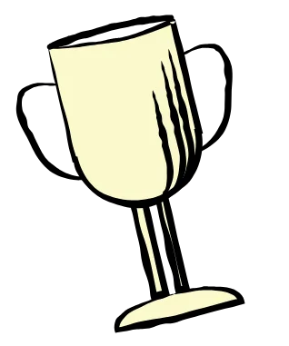
UX-CupFinalen i konkurransen arrangert av Bekk
Hva gjør du når du føler deg utrygg, men situasjonen ikke er alvorlig nok til å ringe politiet? I finalen i UX-Cup hos Bekk designet vi «Trygg», en app som gir politiet en ny rolle i gråsonen mellom trygghet og fare.
Min rolle
Vi jobbet tett som gruppe gjennom hele helgen, og idéutvikling, research og konsept ble gjort i fellesskap. Wireframene laget jeg på egen hånd, basert på diskusjoner og øvelser vi gjorde sammen.
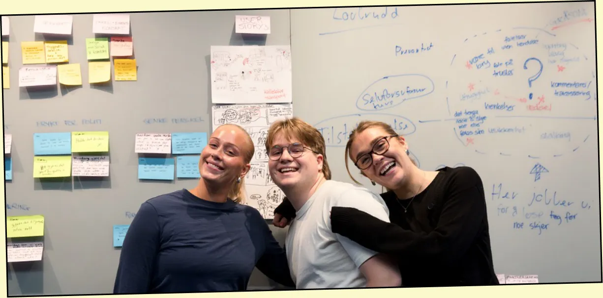
Slik jobbet vi
Fra en gråsone i politiets arbeid til appen Trygg
Steg 1: Tilliten til politiet er høy, men tryggheten i byen er lav
Oppgaven fra Politiets IT-tjenester var å ta «politiet med i lomma»: digitale tjenester som gjør politiet mer tilgjengelig og nyttig i hverdagen. Bakgrunnen var at 7 av 10 har høy tillit til politiet, men at bare 54 % føler seg trygge i Oslo på kveldstid.
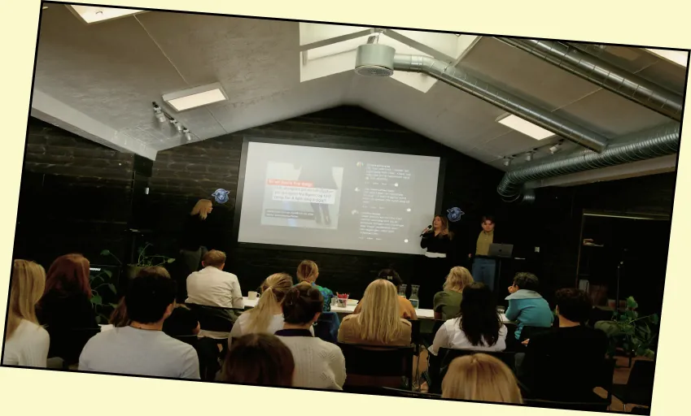
Steg 2: Det finnes en gråsone der ingen i dag hjelper deg
Intervjuer med representanter fra politiet viste at alvorlige hendelser håndteres i tre faser: forebyggende arbeid, reaktive tiltak og oppfølging. Men før en hendelse finnes det en gråsone der folk føler seg utrygge, men ikke vil bry politiet unødvendig.
DerforVi bestemte oss for å designe for gråsonen, fordi politiet i dag ikke har noe tilbud der.
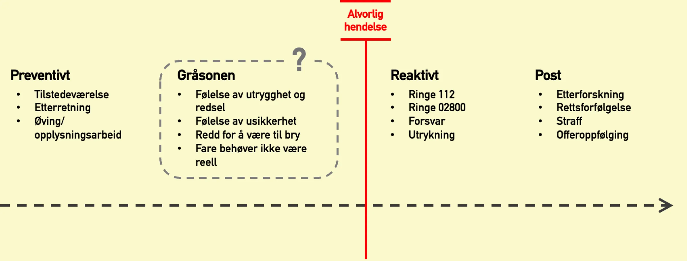
Steg 3: Trygg skiller mellom å føle seg utrygg og å trenge hjelp
Hjemskjermen har to valg: en knapp for når du føler deg utrygg, og en SOS-knapp for når du trenger hjelp.
Fra funn til endring
- Folk vil ikke bry politiet unødvendigUtrygg-knappen deler posisjon og eventuelle opptak med politiet, men forstyrrer ikke operasjonssentralen før du selv trykker videre
- Situasjonen kan bli farlig rasktSOS-knappen sender posisjonen rett til operasjonssentralen, og du kan ringe eller skrive
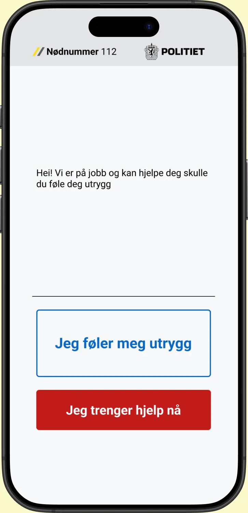
Hjemskjermen 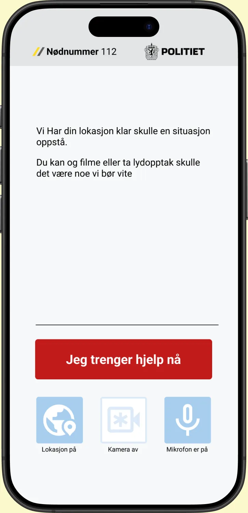
«Jeg føler meg utrygg» 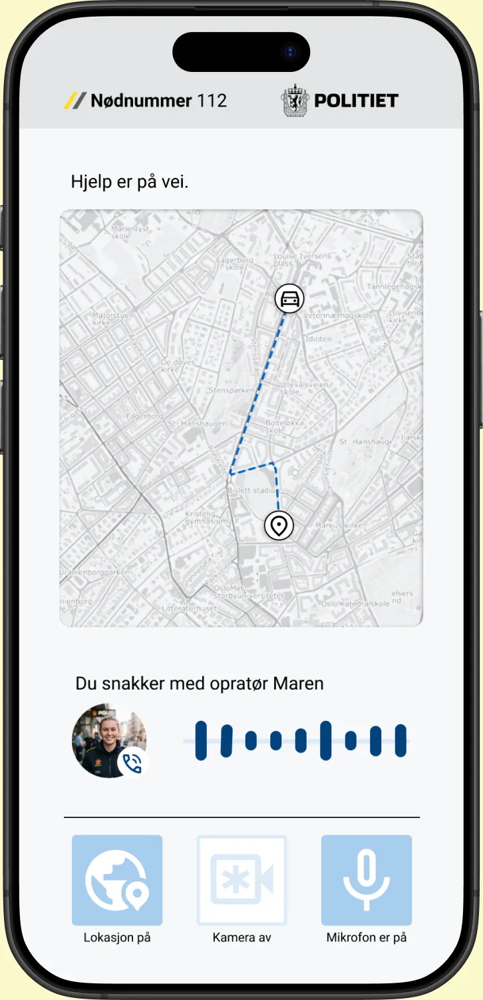
«Jeg trenger hjelp» Steg 4: Appen avlaster politiet i stedet for å kreve mer av dem
En enkel service blueprint viser hvordan brukeren, appen, politiets IT-systemer, sentralbordet og utrykningen henger sammen i hvert steg.
DerforI gråsonen samles informasjonen i politiets IT-systemer uten å involvere sentralbordet. Trygg krever derfor ikke flere menneskelige ressurser før situasjonen faktisk blir alvorlig.
Tabellen kan rulles sidelengs på små skjermer.
Service blueprint for Trygg Hjemskjerm «Jeg føler meg utrygg» «Jeg trenger hjelp» Etter alvorlig hendelse Bruker Er i en utrygg situasjon som ikke er alvorlig nok til å ringe 112 Melder fra at en føler seg utrygg Melder at en trenger hjelp Har dokumentert hendelsesforløpet App Forteller brukeren at politiet er på jobb, og lar brukeren velge om de er utrygge eller trenger akutt hjelp Sender personalia og posisjon til politiet, og eventuelt lyd- eller videoopptak Etablerer taleanrop med sentralbordet, eller chat hvis lyd kan være farlig Interaksjon med politiet Politiets IT-systemer Samler personalia, sporer posisjon og samler eventuelle opptak av situasjonen Sender dataene til sentralbordet Sentralbord Mottar relevant informasjon og kan sende ressurser raskt, også om brukeren ikke kan snakke Utrykning Mottar posisjon og personalia, og er bedre forberedt ved ankomst Rettsvesen Video- og lydopptak kan brukes som bevis i etterforskning og rettsprosesser Steg 5: På bussen viser Trygg hva den er god for
Et brukscase viser hvordan Trygg fungerer i en vanlig situasjon. Les fra venstre mot høyre.
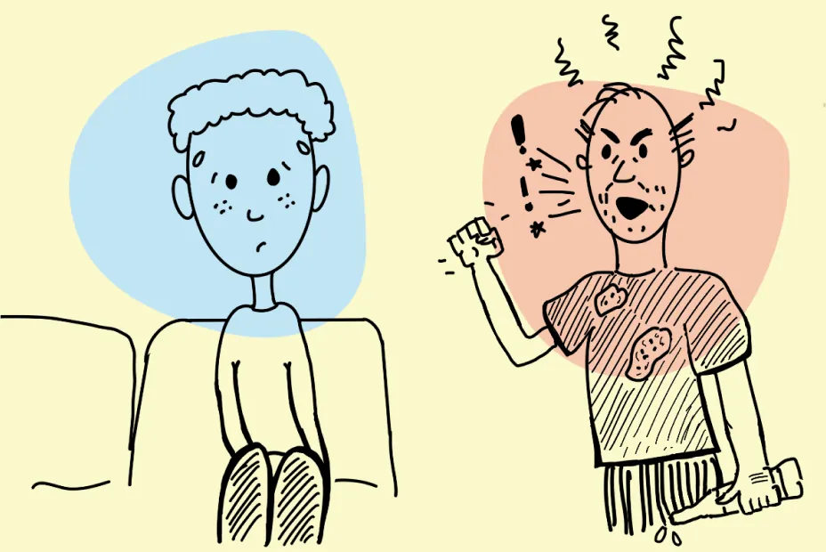
Se for deg at du sitter på bussen. En mann kommer på. Han er høylytt, kontaktsøkende og tydelig beruset. Ingen forbrytelse begås, og situasjonen kan gå over uten at noe farlig skjer. 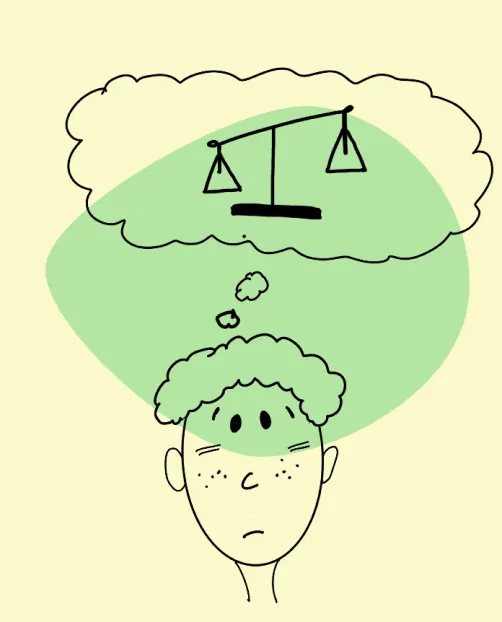
Hva er riktig å gjøre? Du føler deg utrygg, men å ringe politiet kan virke som en overreaksjon. 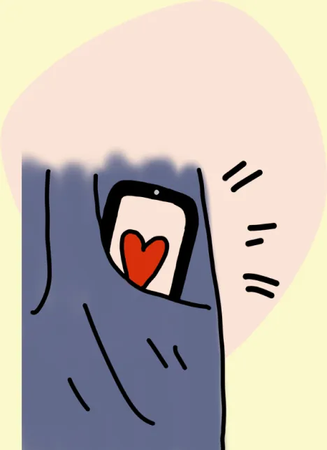
Med Trygg har du en offisiell kanal til politiet i slike usikre situasjoner, og kan forberede deg på at det forverrer seg. 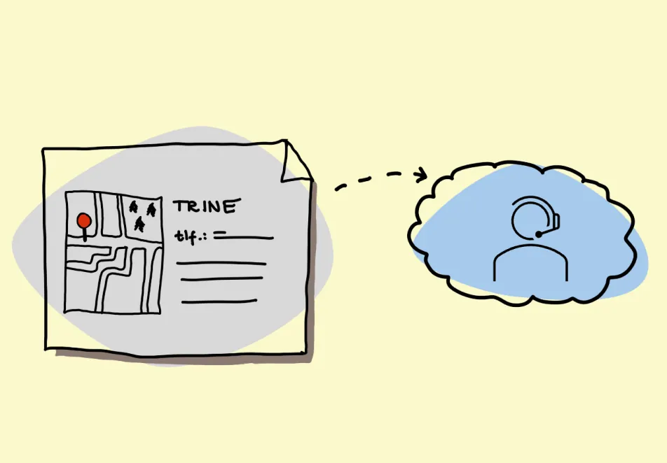
Blir det farlig, er du ett klikk unna hjelp. Med posisjon og dokumentasjon kan politiet rykke ut raskt, uten en telefonsamtale som trekker oppmerksomhet mot deg.
Resultat og læring
Neste gang vil jeg stille flere spørsmål ved oppgaven
Vi vant kvalifiseringsrunden, som ga oss plass i finalen. Der fikk vi oppgaven fra Politiets IT-tjenester og tre dager på å løse den. Finalen kåret én vinner.
Vinnerlaget utfordret premissene i oppgaven og fikk snakke med ansatte på operasjonssentralen. Neste gang vil jeg stille flere spørsmål ved oppgaven og jobbe hardere for å komme i kontakt med brukerne tidlig.
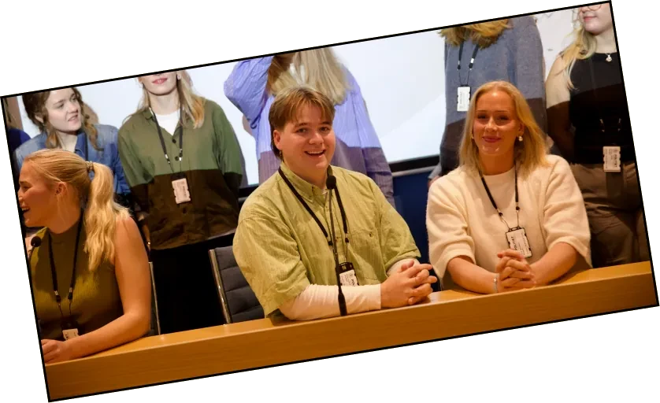